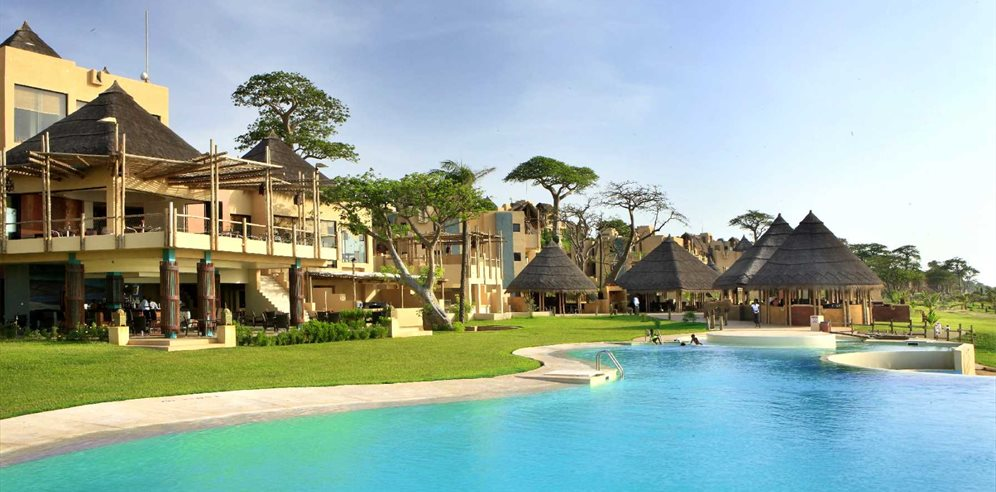
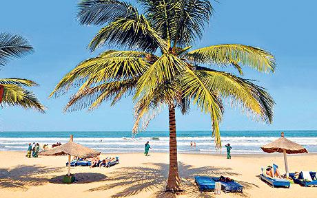
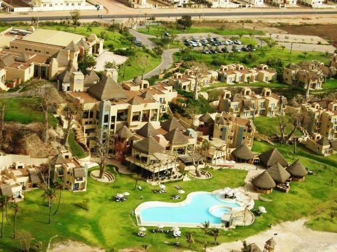
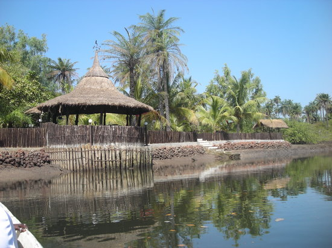

About my self

Mounir Sakr (born 1996) is a West African artist. He was born in Cocodi(Ivory Coast) and works in Gambia. Mounir studied Visual Arts in Miami, Florida. He got his inspiration by being surrounded around Gambian and Senegalese cultures and traditions and these influences still inspire him everyday. When he was young he used to show expression through art very differently than most the other kids around him. He kept experimenting and was curious of the outcome all the time. in 2010, Mounir had to switch schools from an American system to a British system due to the fact that there were no more classes. Furthermore, he kept doing art and was always standing out compared to others, meaning always doing something completely different. There came a time when Mounir took IGCSE’S and at that moment it was clear that art was the right path to take
Skills:
Adobe Illustrator,
Adobe Photoshop,
Sculpting,
Photography,
Drawing,
Mural Painting.



